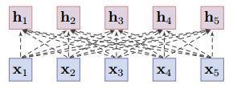

漫谈注意力机制（二）：硬性注意力机制与软性注意力机制
硬性注意力机制与软性注意力机制，以及它们之间有什么联系？
注意力机制的三个步骤
首先我们来回顾注意力机制的三个步骤。
假设有一向量序列 $\boldsymbol{X} = [\boldsymbol{x}_{1}, \dots, \boldsymbol{x}_{n}] \in \mathbb{R}^{n \times d}$，如一句子通过 Embedding 后的输出，其维度为(timesteps, features)。我们有一个和任务相关的向量，称为查询向量 $\boldsymbol{q}$，可以根据任务生成。那么注意力机制要做的事情分三步：
- 查询向量 $\boldsymbol{q}$ 与每个 $\boldsymbol{x}_{i}$ 计算相关性 $\alpha_{i}$，相关性通过评分函数（也称为相关性函数）获得
- 使用softmax归一化相关性 $\alpha_{i}$，称为注意力分布
- 根据注意力分布计算向量序列的均值
假设我们有评分函数 $s$ 用于计算查询向量 $\boldsymbol{q}$ 与每个 $\boldsymbol{x}_{i}$ 的相关性，那么有
使用 softmax 函数进行归一化相关性，获得注意力分布，
我们可能会问，为什么归一化使用softmax方法，而不是其他方法呢？比如数值平均？这个疑问我们等会解答。
加权平均，即注意力分布下的均值，
如果是以点积缩放模型$s(\boldsymbol{x},\boldsymbol{q}) = \frac{\boldsymbol{x}^{\top}\boldsymbol{q}}{\sqrt{d}}$作为评分函数，可以写成更紧凑的形式，
以上的注意力机制称为软性注意力机制。
软性注意力机制
软性注意力，其选择的信息是所有输入向量在注意力分布下的期望，可以简单表示为。
其核心体现在softmax归一化后的加权平均上。不过其有违背直觉的设计？为什么要加权平均？为什么 Attention 要对评分函数进行 softmax 计算归一化？其他的归一化方式不行？
试想一下，从人类注意力上理解，查询向量 $\boldsymbol{q}$ 可以看做是我们需要注意的内容。例如我们要寻找视野中的苹果，那么查询向量 $\boldsymbol{q}$就是苹果相关的内容或特征，用以匹配我们需要找的苹果，而 $\boldsymbol{x}_{i}$ 构成我们的视野范围内的内容。这种注意力可以看做是人类中的聚焦式注意力。以上的设计视乎都和人类中的聚焦式注意力有不一致或违背直觉的地方。
这就需要谈及硬性注意力机制。
硬性注意力机制
硬性注意力（Hard Attention），只关注到某一个输入向量：
- 选取最高概率的一个输入向量
- 选topk高概率的输入向量
- 在注意力分布式上随机采样1个向量
- 在注意力分布式上随机采样k个向量
- 如果深挖，可以深入压缩感知，从稀疏向量序列中随机采样并重构原信号
对于选取最高概率的一个输入向量，数学表示如下，
也就是说，我们只选择向量序列$\boldsymbol{X} = [\boldsymbol{x}_{1}, \dots, \boldsymbol{x}_{n}] \in \mathbb{R}^{n \times d}$中和查询向量最相关的那个$\boldsymbol{x}_{i}$。还有一种策略是随机采样，但是随机采样本身也是无法计算梯度，需要引入梯度估计相关技巧，后续有需求再展开。
硬性注意力的一个缺点是基于最大采样或随机采样的方式来选择信息。因此最终的损失函数与注意力分布之间的函数关系不可导，因此无法使用在反向传播算法进行训练。为了使用反向传播算法，一般使用软性注意力来代替硬性注意力。因此，我们可以理解注意力机制中使用softmax是为计算和训练的问题而作的妥协。那么如何导出它们之间的关系呢？
从硬性注意力机制导出软性注意力机制
评分函数s计算查询向量 $\boldsymbol{q}$ 与每个 $\boldsymbol{x}_{i}$ 相关性$\alpha_{i} = s(\boldsymbol{q}, \boldsymbol{x}_{i})$，另$\boldsymbol{\alpha} = [\alpha_1, \dots, \alpha_n]$。$Q_{[i]}$表示向量$Q$的第$i$个分量。$\boldsymbol{x}_i
= \operatorname{\hat{A}ttention}(\boldsymbol{X},\boldsymbol{q})$表示在给定查询向量$\boldsymbol{q}$情况下，在向量序列 $\boldsymbol{X} = [\boldsymbol{x}_{1}, \dots, \boldsymbol{x}_{n}] \in \mathbb{R}^{n \times d}$中找到与其最相关的向量$\boldsymbol{x}_i$，也就是hard-attention，然后通过一系列推导soft化hard-attention，
需要说明几点：
- 引入$\boldsymbol{\alpha} - \max(\boldsymbol{\alpha})$使得最大值为0，使得$e^0 = 1$，对应one-hot中的1
- 引入$e^x$是考虑到$e^0=1, 0 \lt e^{x|_{x \lt 0}} \lt 1$，更好适配one-hot特点
- max不具有光滑性，被替换为其光滑近似logsumexp
理解好这三点就明白上述推导过程。以上的推导也一举解决两个问题：
- 为什么需要对向量序列$[\boldsymbol{x}_{1}, \dots, \boldsymbol{x}_{n}]$加权平均？
- 为什么需要softmax函数对分值进行归一化？是否可以使用其他归一化方法？
从优化的角度看，本来是要优化，
但是argmax不具有光滑性，需要数学上的妥协，于是优化soft化的版本，
因此，可以看到softmax是hard-attention到soft-attention的桥梁。硬性注意力机制难以处理梯度优化问题，以上推导通过光滑逼近硬性注意力机制，即通过softmax函数来说近似argmax（准确来说是one-hot(argmax)），因而获得软性注意力机制。
换成人类注意力语境下来说，经过聚焦式注意力需要主动性，即有重点所在，但是也容易被外部信息的不均衡性所分散，进而无法持续聚焦在一个关注点上，换成Attention机制来说就是注意力分布。这种特点不正是soft-Attention的特点么？
加权平均下的side effect
比起hard-Attention $\operatorname{Attention}(X, \mathbf{q}) = \boldsymbol{x}_{\arg \max \alpha_{n}}$，soft-Attention通过加权平均，
其中的注意力分布$\lambda_1, \dots, \lambda_n$可以看作是动态权重，

soft-Attention通过加权平均带来了很多side effect。
由于权重$\lambda_i$是来自查询向量与评分函数，因此其权重取值不受两个向量$x_i,x_j$之间的距离影响，因此可以解决长距离依赖问题。相比较于RNN的递归结构、CNN的局部编码结构，都是对序列的短期（局部）编码。
此外，加权平均能够把更多的信息纳入考虑，想文本类信息具有局部性，需要考虑上下文context，因此soft-Attention架构很适合NLP任务。从数学的角度来讲，通过加权平均也能平滑掉数据中的噪声。注意力分布下的期望值到底意味着什么？我认为期望即加权平均本身就丢失大量信息，但是有效的查询向量下，起到数据融合压缩信息。
总的来说，加权平均下的soft-Attention有如下side effect：
- 对数据局部性建模，考虑上下文
- 解决长距离依赖问题，RNN是因为远距离的梯度太弱难参与优化，而Attention动态权重并没有这个问题
- 加权平均也能平滑掉数据中的噪声
- 数据融合，目标驱动的压缩信息
总结
事实上，软性注意力机制可以理解成是硬性注意力机制为处理梯度优化问题退而求次的结果，而这个退而求次的结果由于引入加权平均，在很多任务上带来很多很好的side effect。
Attention的本质是关注重点，但是“关注重点”这个说法很模糊，需要转换为数学上确切的描述，argmax算是一种确切的描述。如果能够找到其他的确切的描述，那么就可以用不同的数学方法对Attention建模。
转载请包括本文地址：https://allenwind.github.io/blog/9478
更多文章请参考：https://allenwind.github.io/blog/archives/